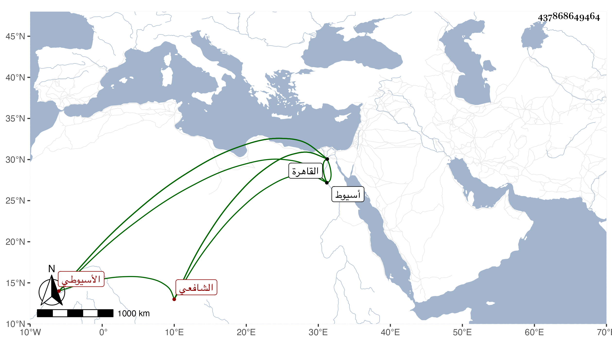

0902Sakhawi.DawLamic.ITO20230111-ara1.EIS1600.437868649464
Biography ID: 437868649464
368
أبو الطيب الأسيوطي محمد بن محمد بن محمد بن علي بن الركن عمر بن حسن المحب بن الشمس الشافعي نزيل القاهرة ووالد أصيل الدين محمد الماضي ويعرف في بلده بابن الركن لقب جده الأعلى وفي القاهرة بكنيته . ولد سنة ثمان وعشرين وثمانمائة بأسيوط وحفظ بها القرآن والشاطبية والمنهاج وألفية النحو عند المحب بن النقيب ثم قدم القاهرة بعد الأربعين فنزل عند ابن عمه أبي الحجاج السيوطي وأخذ في القراآت عن الزين عبد الغني الهيثمي والعربية عن خير الدين ابن الرومي وتفقه بالشهاب المسيري قرأ عليه المنهاج ولازم المناوي في عدة تقاسيم وكذا لازم تلميذه الجوجري في الفقه وأصوله والعربية وغيرها وحضر أيضا عند المقسي وسمع في الظاهرية القديمة على الأربعين وعلى أم هاني الهورينية وطائفة وتدرب في صناعة الشروط بمسلم بلديه وبابن النبيه والقرافي والنبراوي وراجع فضلاء أرباب المذاهب في مسائل الخلاف حتى تميز وأشير إليه بالفضيلة وحسن الفهم والتؤدة والتثبت وجودة الخط والعبارة فارتقى ولازال في ترق إلى أن انفرد باشتغال السلطان فمن دونه وركن الناس إليه واعتمدوه وتوسل به في قضايا فأنهاها كل ذلك مع الحشمة والرياسة وحسن الشكالة وعلى الهمة التي ربما تصل به إلى التعصب والالتفات للفقير والإحسان إليه . وحج مرارا واستقر في خدمة الشيخونية بعد الشحنة وكثرت جهاته وتزايدت وجاهته فلما كان في جمادى الثانية سنة اثنتين وتسعين قام على ابن شرف حمية للشافعي فتمقته السلطان لعدم موافقته لغرضه وكلمه بكلام يابس بل صرح في أول رجب مع كونه غائبا بلعنه وأنه نقص من عينه ونحو ذلك فلم يحتمل هذا واستمر يتجلد ويتنهد إلى أن غرق في صفر من التي تليها ولم يخلف في مجموعه مثله رحمه الله وإيانا .
